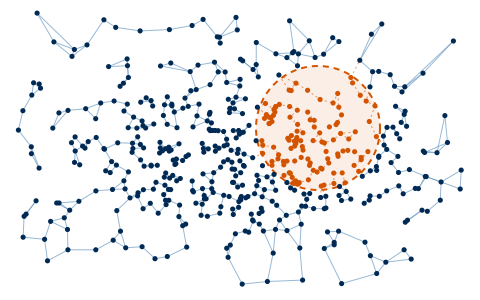

From Graph Laplacians to Sheaves: Coordination, Tracking and Safety for Heterogeneous Teams
James Fairbanks
Department of Mechanical & Aerospace Engineering, University of Florida
Cross-Agency Dynamics Seminar (CADS) · 29 October 2026


How We Got Here
1DARPA ASKE

Models are objects, relationships are morphisms; functors map model structure to behavior
2DARPA CompMods
ASKE ideas applied to PDE solvers: discrete differential geometry in Julia
3DARPA YFA

Compositional structures in modeling frameworks
4DARPA ASKEM

Scaling to multiple modeling frameworks, and bringing in control
5ONR Code 32

Bringing diagrams to machine learning and optimization algorithms
6AFOSR CODAC

Sheaves for coordination and compositional optimization: this talk
7ARO / ARL
Scaling the PDE solvers to unstable MHD
8DARPA DISCORD

Scaling to 100k agents under hostile disruption of swarms
Graph-Laplacian Control, and Its Assumptions
Agents are nodes, sensing or communication links are edges. Each agent compares its state with its
neighbors', and local disagreement drives the network toward a global objective.
- ●Compatible state spaces across every agent
- ●A measurement each pair of neighbors can compare directly
- ●Two planar robots comparing positions in the same frame


Natural for consensus, formation control, and leader–follower tracking — as long as the states are
comparable.
Real Systems Are Heterogeneous
- ●Agents and targets need not live in the same dimension
- ●Only partial or projected measurements may be available
- ●Sensing models differ across a fleet
- ●The graph records who talks to whom, and nothing about what they can compare

[1] T. Hanks, H. Riess, S. Cohen, T. Gross, M. Hale, and J. Fairbanks. IEEE Conference on Decision and Control, 2025
Cellular Sheaves Over Graphs
Definition (Cellular Sheaf)
A cellular sheaf \(\mathcal{F}\) over a graph \(G = (V, E)\) consists of:
- A vertex stalk (vector space) \(\mathcal{F}(v)\) for each vertex \(v \in V\)
- An edge stalk (vector space) \(\mathcal{F}(e)\) for each edge \(e \in E\)
- A linear restriction map \(\mathcal{F}_{v \unlhd e}\colon \mathcal{F}(v) \to \mathcal{F}(e)\) for each incident pair \(v \unlhd e\)

[2] J. Hansen and R. Ghrist. Journal of Applied and Computational Topology, 3(4):315–358, 2019
The Agents Reach and Hold the Formation
Formations, in the Plane
Agent and Target Trajectories

Tracking Error by Gain
A larger gain shrinks the residual error, as the convergence bound predicts.
Agents converge from arbitrary initial positions into the square and triangle formations, and hold them as
the targets move.
[7] T. Hanks, C. F. Nino, J. Bou Barcelo, A. Copeland, W. E. Dixon, and J. Fairbanks. European Control Conference, 2026